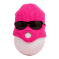

07PART 01 · 생체역학
힘만 키우면 장타? 절반만 맞다.
논문골프 스윙의 에너지·파워 분석 (모델링)
Nesbit, S.M. & Serrano, M. (2005) · J. Sports Science & Medicine, 4(4), 520–533 · 원제 'Work and Power Analysis of the Golf Swing'
약 150+ 인용

@mummys_hand_golf밀어서 다음 →